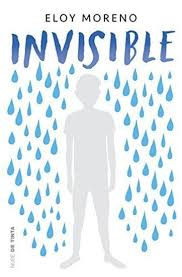

Worldreading


¿Quien no ha deseado alguna vez ser invisible?
¿Quien no ha deseado alguna vez dejar de serlo?
El problema es que nunca he llegado a controlar bien ese poder:
A veces, cuando más ganas tenía de ser invisible, era cuando más gente me veía, y en cambio, cuando deseaba que todos me
vieran, era cuando a mi cuerpo le daba por desaparecer.
Nº de páginas:304
Editorial:Nube de Tinta
Idioma:CASTELLANO
Año de edición:2018